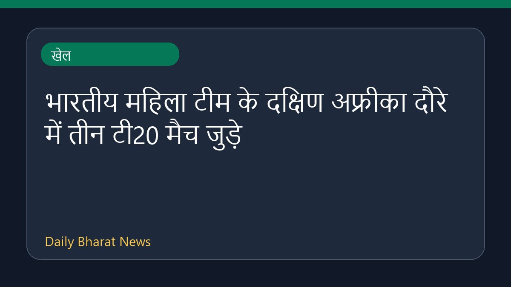

भारतीय महिला टीम के दक्षिण अफ्रीका दौरे में तीन टी20 मैच जुड़े

क्रिकबज की रिपोर्ट के अनुसार, क्रिकेट दक्षिण अफ्रीका (CSA) ने भारत के आगामी दौरे के कार्यक्रम में बदलाव करते हुए तीन अतिरिक्त टी20 अंतरराष्ट्रीय मैच शामिल किए हैं। इस विस्तार के साथ भारतीय महिला क्रिकेट टीम का दक्षिण अफ्रीका दौरा अब और अधिक व्यापक हो गया है। हालांकि, इस संशोधित शेड्यूल को लेकर अन्य विशिष्ट विवरण और मैच की तारीखों की पूरी जानकारी अभी सीमित है, लेकिन इस बदलाव से दोनों टीमों के बीच मुकाबलों की संख्या बढ़ गई है।
मूल स्रोत: Sports News Sources
CSA revises schedule to include three T20Is for India series - Cricbuzz ↗
CSA revises schedule to include three T20Is for India series - Cricbuzz ↗